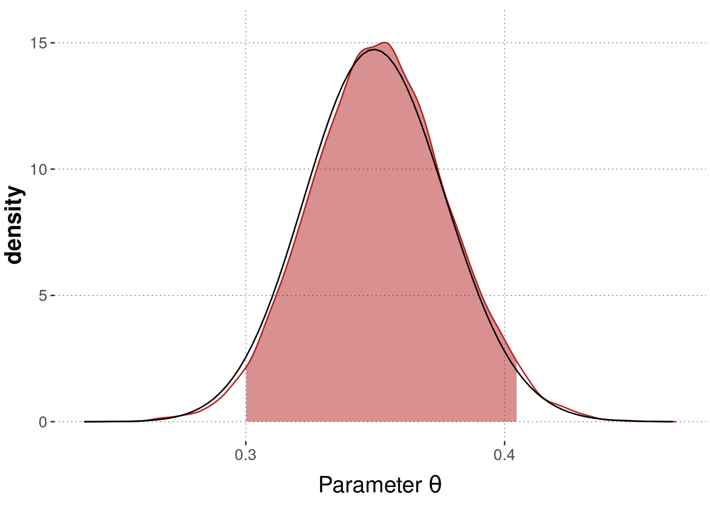

There are several methods of computing approximations of Bayesian posteriors. Variational inference, for example, hinges on the fact that under very general conditions, Bayesian posterior distributions are well approximated by (multi-variate) normal distributions. The more data, the better the approximation. We can then reduce the approximation of a Bayesian posterior to a problem of optimizing parameter values: we simply look for the parameter values that yield the “best” parametric approximation to the Bayesian posterior. (Here, “best” is usually expressed in terms of minimizing a measure of divergence between probability distributions, such as Kullback-Leibler divergence.) Another prominent method of approximating Bayesian posteriors is rejection sampling.
The most prominent class of methods to approximate Bayesian posteriors are Markov Chain Monte Carlo methods. We will describe the most basic version of such MCMC algorithms below. For most applications in the context of this introductory book, it suffices to accept that there are black boxes (with some knobs for fine-tuning) that, if you supply a model description, priors and data, will return samples from the posterior distribution.
9.3.1 Of apples and trees: Markov Chain Monte Carlo sampling
Beginning of each summer, Nature sends out the Children to distribute the apples among the trees. It is custom that bigger trees ought to receive more apples. Indeed, every tree is supposed to receive apples in proportion to how many leaves it has. If Giant George (an apple tree!) has twice as many leaves as Thin Finn (another apple tree!), Giant George is to receive twice as many apples as Thin Finn. This means that if there are \(n_a\) apples to distribute in total, and \(L(t)\) is the number of leaves of tree \(t\), every tree should receive \(A(t)\) apples, where:
\[ A(t) = \frac{L(t)}{\sum_{t'} L(t')} \ n_a \]
The trouble is that Nature does not know the number of leaves of all the trees: Nature does not care about numbers. The Children, however, can count. But they cannot keep in mind the number of leaves for many trees for a long time. And no single Child could ever visit all the trees before the winter. This is why the Children distribute apples in a way that approximates Nature’s will. The more apples to distribute, the better the approximation. Nature is generally fine with approximate but practical solutions.
When a Child visits a tree, it affectionately hangs an apple into its branches. It also writes down the name of the tree in a list next to the number of the apple it has just delivered. It then looks around and selects a random tree in the neighborhood. If the current tree \(t_c\), where the Child is at present, has fewer leaves than this other tree \(t_o\), i.e., if \(L(t_c) < L(t_o)\), the Child visits \(t_o\). If instead \(L(t_c) \ge L(t_o)\) the child flips a coin and visits \(t_o\) with a probability proportional to \(\frac{L(t_o)}{L(t_c)}\). In other words, the Child will always visit a tree with more leaves, and it will visit a tree with fewer leaves depending on the proportion of leaves.
When a large number of apples are distributed, and Nature looks at the list of trees each Child has visited. This list of tree names is a set of representative samples from the probability distribution:
\[P(t) \propto L(t)\]
These samples were obtained without the knowledge of the normalizing constant. The Children only had \(L(t)\) at their disposal. When trees are parameter tuples \(\theta\) and the number of leaves is the product \(P(D \mid \theta) \ P(\theta)\), the Children would deliver samples from the posterior distribution without knowledge of the normalizing constant (a.k.a. the integral of doom).
The sequence of trees visited by a single Child is a sample chain. Usually, Nature sends out at least 2-4 Children. The first tree a Child visits is the initialization of the chain. Sometimes Nature selects initial trees strategically for each Child. Sometimes Nature lets randomness rule. In any case, a Child might be quite far away from the meadow with lush apple trees, the so-called critical region (where to dwell makes the most sense). It might take many tree hops before a Child reaches this meadow. Nature, therefore, allows each Child to hop from tree to tree for a certain time, the warm-up period, before the Children start distributing apples and taking notes. If each Child only records every \(k\)-th tree it visits, Nature calls \(k\) a thinning factor. Thinning generally reduces autocorrelation (think: the amount to which subsequent samples do not carry independent information about the distribution). Since every next hop depends on the current tree (and only on the current tree), the whole process is a Markov process. It is light on memory and parallelizable but also affected by autocorrelation. Since we are using samples, a so-called Monte Carlo method, the whole affair is a Markov Chain Monte Carlo algorithm. It is one of many. It’s called Metropolis-Hastings. More complex MCMC algorithms exist. One class of such MCMC algorithms is called Hamiltonian Monte Carlo, and these approaches use gradients to optimize the proposal function, i.e., the choice of the next tree to consider going to. They use the warm-up period to initialize certain tuning parameters, making them much faster and more reliable (at least if the distribution of leaves among neighboring trees is well-behaved).
How could Nature be sure that the plan succeeded? If not even Nature knows the distribution \(P(t)\), how can we be sure that the Children’s list gives representative samples to work with? Certainty is petty. The reduction of uncertainty is key! Since we send out several Children in parallel, and since each Child distributed many apples, we can compare the list of trees delivered by each Child (= the set of samples in each chain). For that purpose, we can use statistics and ask: is it plausible that the set of samples in each chain has been generated from the same probability distribution? - The answer to this question can help reduce uncertainty about the quality of the sampling process.
Exercise 9.6
On the right, there is a shuffled list of the steps that occur in the MH algorithm. Bring the list in the right order by dragging each step to the corresponding box on the left.
If the new proposal has a higher posterior value than the most recent
sample, then accept the new proposal.
Generate a new value (proposal).
Set an initial value.
Compare the posterior value of the new proposal and the height of the
posterior at the previous step.
Choose to accept or reject the new proposal concerning the computed
proportion.
If the new proposal has a lower posterior value than the most recent
sample, compute the proportion of the posterior value of the new proposal and the height of the posterior at the previous step.
Step 1:
Step 2:
Step 3:
Step 4:
Step 5:
Step 6:
Step 1: Set an initial value.
Step 2: Generate a new value (proposal).
Step 3: Compare the posterior value of the new proposal and the height of the posterior at the previous step.
Step 4: If the new proposal has a higher posterior value than the most recent sample, then accept the new proposal.
Step 5: If the new proposal has a lower posterior value than the most recent sample, compute the proportion of the posterior value of the new proposal and the height of the posterior at the previous step.
Step 6: Choose to accept or reject the new proposal concerning the computed proportion.
9.3.2 Excursion: Probabilistic modeling with Stan
There are a number of software solutions for Bayesian posterior approximation, all of which implement a form of MCMC sampling, and most of which also realize at least one other form of parameter estimation. Many of these use a special language to define the model and rely on a different programming language (like R, Python, Julia, etc.) to communicate with the program that does the sampling. Some options are:
WinBUGS: a classic which has grown out of use a bit
WebPPL: light-weight, browser-based full probabilistic programming language
pyro: for probabilistic (deep) machine learning, based on PyTorch
greta: R-only probabilistic modeling package, based on Python and TensorFlow
This section will showcase an example using Stan.
Later parts of this book will focus on regression models, for which we will use an R package called brms.
This package uses Stan in the background.
We do not have to write or read Stan code to work with brms.
Still, a short peek at how Stan works is interesting if only to get a rough feeling for what is happening under the hood.
9.3.2.1 Basics of Stan
In order to approximate a posterior distribution over parameters for a model, given some data, using an MCMC algorithm, we need to specify the model for the sampler. In particular, we must tell it about (i) the parameters, (ii) their priors, and (iii) the likelihood function. The latter requires that the sampler knows about the data. To communicate with Stan we will use the R package rstan (there are similar packages also for Python, Julia and other languages). More information about Stan can be found in the documentation section of the Stan homepage.
The usual workflow with Stan and rstan consists of the following steps. First, we use R to massage the data into the right format for passing to Stan (a named list, see below). Second, we write the model in the Stan programming language. We do this in a stand-alone file.52 Then, we run the Stan code with the R command rstan::stan supplied by the package rstan. Finally, we collect the output of this operation (basically: a set of samples from the posterior distribution) and do with it as we please (plotting, further analysis, diagnosing the quality of the samples, …).
This is best conveyed by a simple example.
9.3.2.2 Binomial Model
Figure 9.8 shows the Binomial model for coin flips, as discussed before. We are going to implement it in Stan.
Figure 9.8: The Binomial Model (repeated from before).
We use the data from the King of France example, where we are interested in the number \(k = 109\) of “true” responses to sentences with a false presupposition over all \(N = 311\) relevant observations.
We collect this information in a named list, which we will pass to Stan.
Next, we need to write the actual model. Notice that Stan code is strictly regimented to be divided into different blocks, so that Stan knows what is data, what are parameters and what constitutes the actual model (prior and likelihood). Stan also wants to know the type of its variables (and the ranges of values these can take on).
data {
int<lower=0> N ;
int<lower=0,upper=N> k ;
}
parameters {
real<lower=0,upper=1> theta ;
}
model {
# prior
theta ~ beta(1,1) ;
# likelihood
k ~ binomial(N, theta) ;
}
We save this Stan code in a file binomial_model.stan (which you can download here) in a folder models_stan and then use the function rstan::stan to run the Stan code from within R.
The object returned from this call to Stan is a special model fit object. If we just print it, we get interesting information about the estimated parameters:
## Inference for Stan model: binomial_model.
## 4 chains, each with iter=3000; warmup=500; thin=1;
## post-warmup draws per chain=2500, total post-warmup draws=10000.
##
## mean se_mean sd 2.5% 25% 50% 75% 97.5% n_eff Rhat
## theta 0.35 0.00 0.03 0.30 0.33 0.35 0.37 0.40 3501 1
## lp__ -203.42 0.01 0.69 -205.36 -203.58 -203.16 -202.98 -202.93 5157 1
##
## Samples were drawn using NUTS(diag_e) at Tue Jan 5 06:21:26 2021.
## For each parameter, n_eff is a crude measure of effective sample size,
## and Rhat is the potential scale reduction factor on split chains (at
## convergence, Rhat=1).
To get the posterior samples in a tidy format we use a function from the tidybayes package:
## # A tibble: 1 x 4
## Parameter `|95%` mean `95%|`
## <chr> <dbl> <dbl> <dbl>
## 1 theta 0.299 0.351 0.403
Figure 9.9 moreover shows a density plot derived from the MCMC samples, together with the estimated 95% HDI and the true posterior distribution (in back), as derived by conjugacy.

Figure 9.9: Posterior over bias \(\theta\) given \(k=109\) and \(N=311\) approximated by samples from Stan, with estimated 95% credible interval (red area). The black curve shows the true posterior, derived through conjugacy.
RStudio provides syntax highlighting for Stan code. Use the file ending *.stan.↩